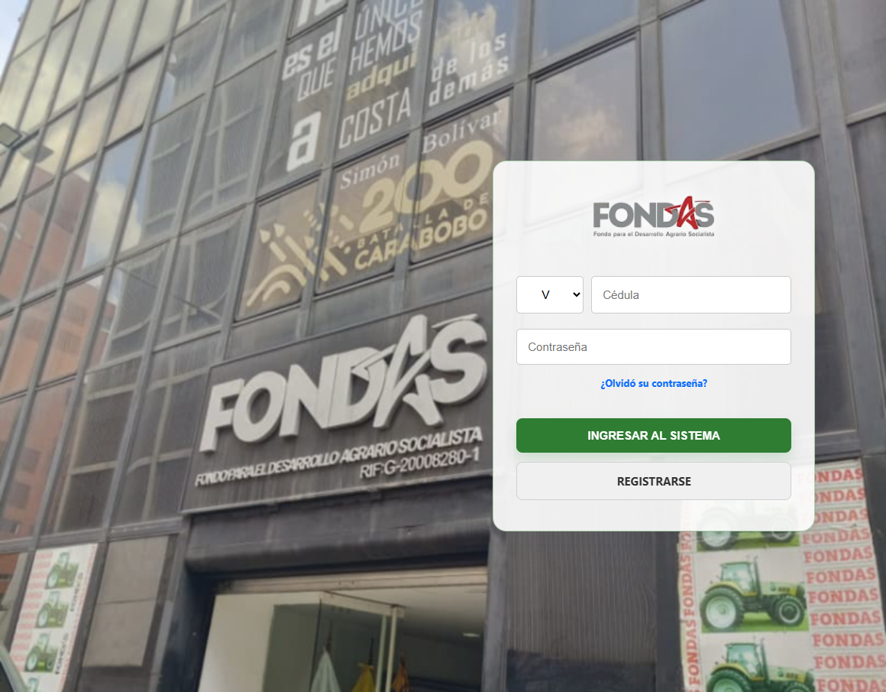
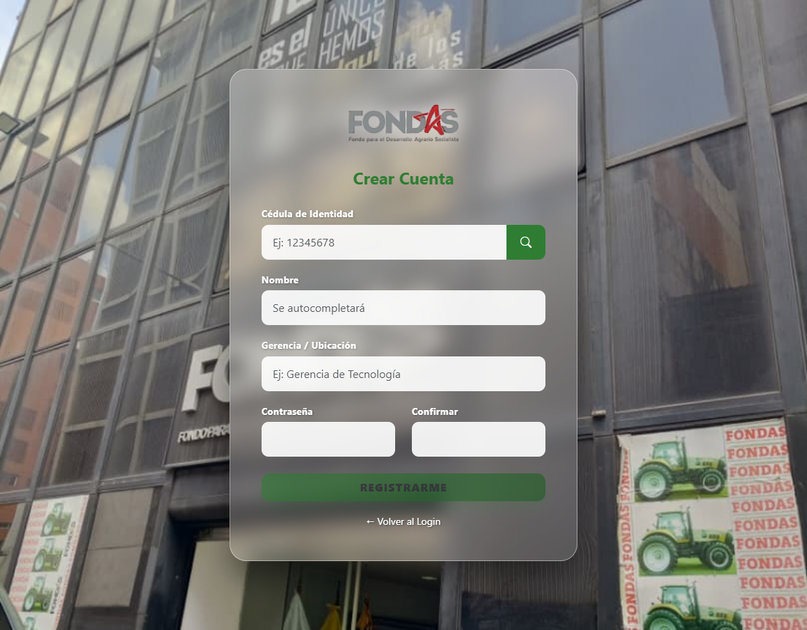
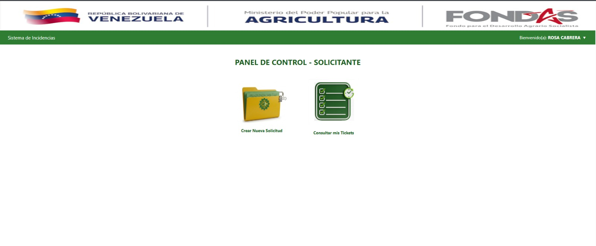
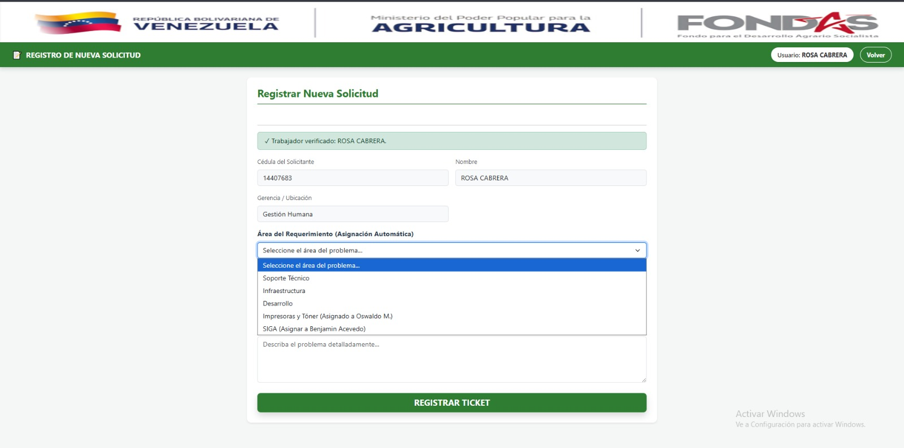
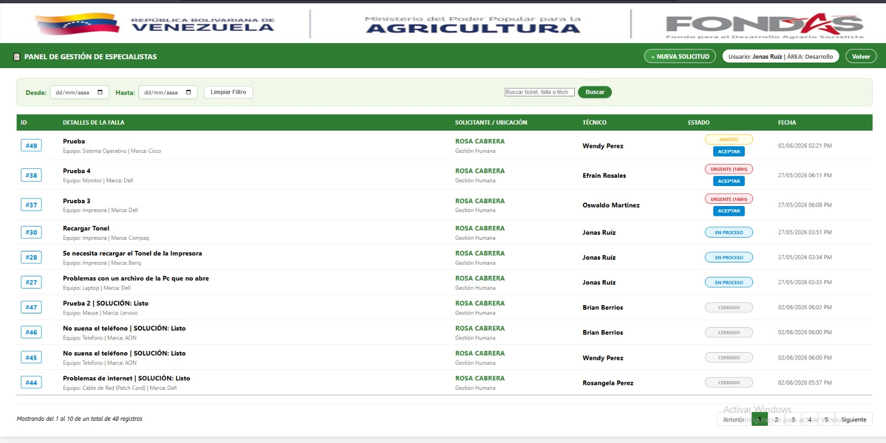
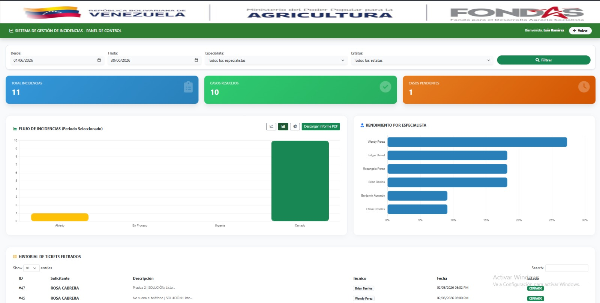
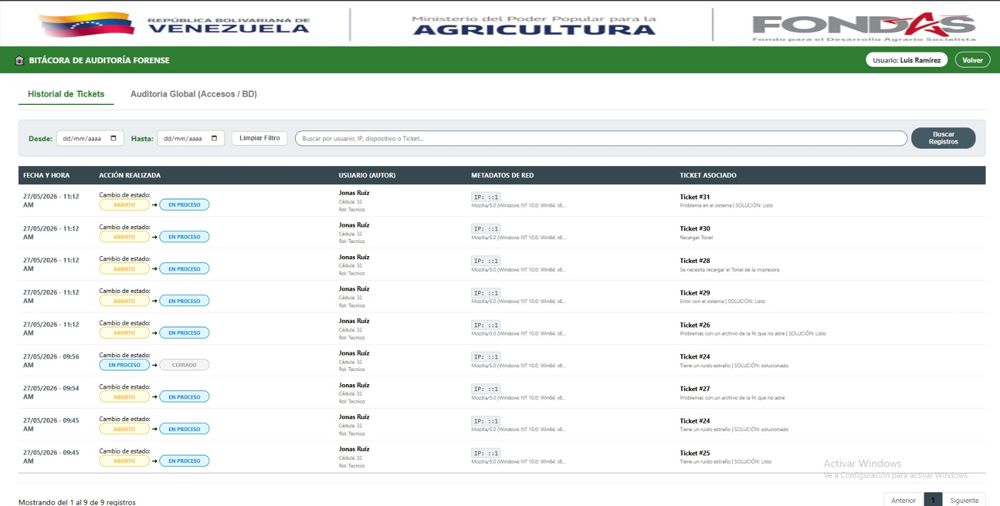

Manual de Usuario
Bienvenido al manual interactivo del sistema de gestión de requerimientos de FONDAS. Aquí aprenderás todo sobre pantallas, botones, flujos, mensajes y ejemplos visuales.
1. Acceso al sistema
1.1 Página de Login
El acceso se realiza desde la pantalla principal (login.php). Debes completar los siguientes campos obligatorios:
- Tipo de documento: V (Venezolano), E (Extranjero) o J (Jurídico).
- Cédula: Ingresa sólo números, máximo 8 dígitos.
- Contraseña: Su clave secreta asignada.

En la parte inferior encontrarás enlaces útiles como ¿Olvidó su contraseña? y Registrarse.
2. Registro y recuperación de contraseña
2.1 Registro de nuevo solicitante
Si eres un usuario nuevo, puedes registrarte desde registro_usuario.php. Los campos que debes proporcionar son:
- Cédula de identidad
- Nombre completo
- Gerencia o ubicación
- Contraseña y su confirmación

2.2 Recuperación de clave
En caso de olvido, el sistema tiene un flujo seguro de recuperación en 4 pasos:
- Ingresa tu cédula en
gestion_clave.php. - El sistema verifica y procesa la solicitud en
procesar_recuperacion.php. - Asignas una nueva clave en
nueva_clave.php. - Se confirma el cambio a través de
guardar_clave.php.
3. Panel de Solicitante
Al iniciar sesión como solicitante, será redirigido a su panel personal en index_solicitante.php.
Desde este espacio centralizado puedes tomar dos acciones principales:
- Crear nueva solicitud: Inicia el proceso para reportar un incidente.
- Ver mis tickets: Revisa el estado de todas las solicitudes que has creado previamente.

4. Registro de nueva solicitud
La creación de un ticket se realiza en la página registro.php mediante un formulario dinámico e intuitivo. Sigue estos pasos:
- Área del problema: Selecciona el departamento al que va dirigido (ej. Soporte, Infraestructura).
- Tipo y Marca: Al elegir el área, el sistema cargará automáticamente los tipos y marcas disponibles.
- Descripción: Describie en detalle la falla que deseas reportar, y si es necesario, adjunta imágenes o archivos de soporte.
- Enviar: Presiona el botón verde para generar su número de ticket.

5. Consulta de tickets
Ubicado en ver_tickets.php. Aquí visualizarás una tabla completa con todos los datos clave: ID, Descripción, Solicitante, Técnico asignado, Estado y Fecha de creación.

Acciones disponibles por fila
- ACEPTAR: El técnico toma la responsabilidad del ticket.
- ASIGNAR: Permite reasignar a otro técnico especializado.
- VER: Despliega el historial completo y comentarios.
- CERRAR: Finaliza el ticket solicitando un comentario de cierre.
6. Funciones de Especialista / Técnico / Alta Gerencia
El panel para estos roles es views/home_especialista.php, y contiene accesos a herramientas administrativas vitales:
- Gestión integral de tickets.
- Control de personal y cargas de trabajo.
- Visualización de estadísticas y auditorías (exclusivo para Jefes).
ajax/check_new_tickets.php cada 3 segundos. Si ingresa un nuevo ticket, recibirás una alerta sonora y visual automáticamente en tu pantalla sin necesidad de recargar.
7. Auditoría y Reportes
Generación de Reportes PDF
Desde views/generate_reporte_pdf.php se puede emitir reportes profesionales filtrando por rango de fechas, área o estado específico del ticket.

Registro de Auditoría
Todo movimiento queda registrado por seguridad. En auditoria_sistema.php, los administradores pueden consultar logs detallados que incluyen la IP de origen, el usuario, la acción realizada y la marca de tiempo exacta.

8. Seguridad y Manejo de Sesiones
Todo el acceso al sistema FONDAS está estrictamente protegido mediante sesiones PHP de alta seguridad.
- Si intentas acceder a módulos privados (como
ver_tickets.php) sin haber iniciado sesión, el sistema te redirigirá automáticamente a la pantalla de login. - Todos los flujos de contraseñas (recuperación, nueva clave, guardado) están aislados en archivos específicos (
gestion_clave.php,procesar_recuperacion.php) para evitar vulnerabilidades. - Las contraseñas de los usuarios no deben ser compartidas, y se recomienda cerrar sesión tras finalizar el turno.
9. Base de datos y mantenimiento
La estructura de la base de datos de FONDAS es robusta y escalable. A continuación, se mencionan las tablas más importantes:
solicitante: Almacena datos de los usuarios que reportan fallas.especialista: Contiene la información de los técnicos y su disponibilidad.solicitud: Tabla principal de tickets con estado y fechas.tipo,marca,area_problema: Tablas de catálogos paramétricos.auditoria_general: Tabla de logs de seguridad.
scripts/ encontrarás utilidades para inicialización y validación de esquemas.10. Anexos y Checklist final
Asegúrate de colocar las siguientes imágenes en la carpeta screenshots/ para que este manual se vea perfectamente:
Básicas
- login.png
- registro_usuario.png
- index_solicitante.png
- registro_ticket.png
Avanzadas
- ver_tickets.png
- aceptar_ticket.png
- home_especialista.png
- auditoria.png